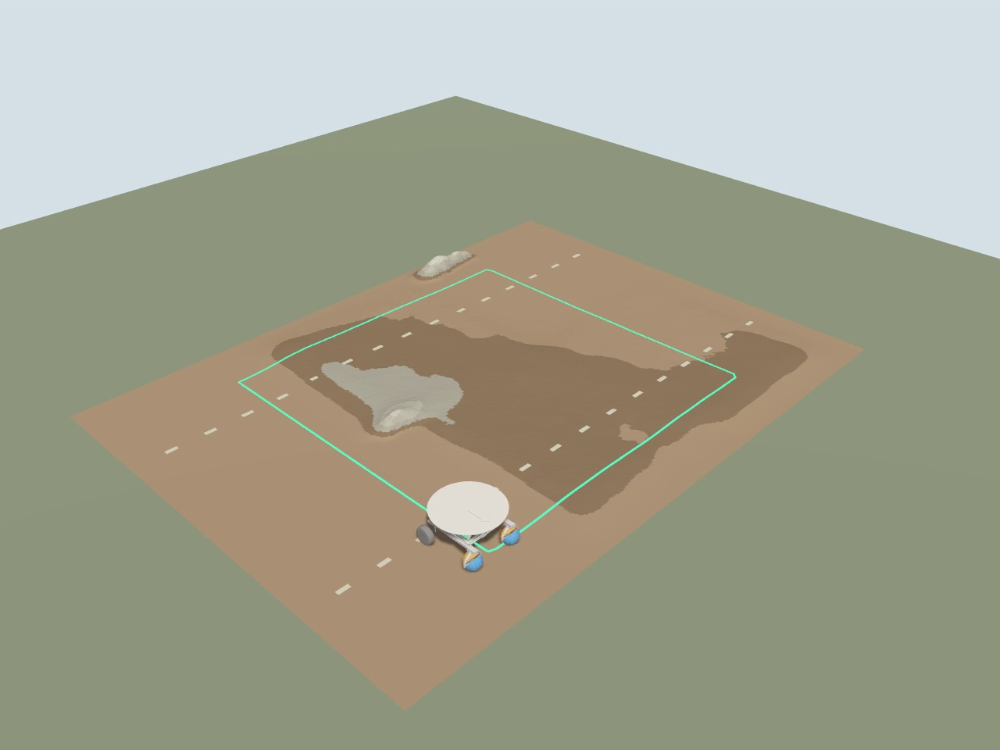
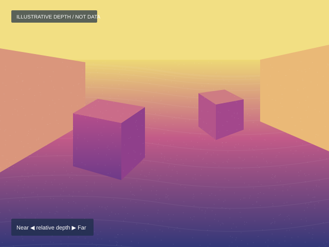
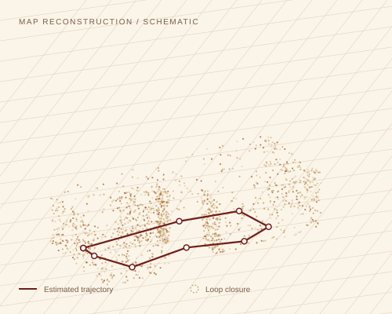

RGB-D observations connect the robot’s local motion to a persistent map. A navigation layer turns that map into a path the controller can follow.
01 / From pixels to position
A scene, its depth, and a map.
Aligned color and depth describe nearby geometry. Repeated views help RTAB-Map recognize places and correct accumulated drift.
SIMULATION / PERCEPTION EXAMPLE


Current Gazebo external camera frame, used as an RGB placeholder. Replace with an onboard D455 image.
RTAB-MAP / VISUALIZATION SLOTIllustrative

Local geometry + global consistency
Keyframes form a pose graph. A recognized place adds a constraint that refines the map.
Replace this schematic with the exported RTAB-Map cloud and optimized trajectory.
01 / CAPTURE
Synchronize
Read RGB, registered depth, camera calibration, and IMU timestamps.
02 / ESTIMATE
Track local motion
Use wheel–IMU odometry on the car, or RGB-D odometry in the SLAM simulation.
03 / REMEMBER
Recognize places
RTAB-Map matches visual features and adds loop-closure constraints.
04 / NAVIGATE
Correct the route
Use the map correction to keep waypoint targets consistent with the world.
02 / On the live car
Same observations. A real environment.
The D455 publishes the same canonical RGB-D topics used by the simulation. Its calibrated mount places each observation in the robot’s coordinate frame.
The Pi fuses wheel encoders and the BNO055 for continuous local odometry. RTAB-Map uses the camera to localize against a saved map and supplies the global correction.
mapRTAB-Map →odomEKF →base_link
One publisher per transform: RTAB-Map owns map → odom; the local EKF owns odom → base_link. A loop closure changes the global correction without jumping the local feedback pose.
⌖Live D455 captureRGB image · registered depth · map overlayReal-world recording to be added
Reserve this frame for a time-aligned image and depth map captured on the car. Measure the camera transform before interpreting the reconstruction.
03 / Planning & path following
From a map to motor commands.
Terrain geometry becomes a cost map. A global planner proposes the route; a local controller follows it while reacting to obstacles.
Target Nav2 integration
RTAB-MapPose graph + point cloud
→
Cost mapsObstacles, slope, clearance
→
Nav2 plannerGoal → global path
→
Local controllerPath → /cmd_vel
→
HAMR adapterWheel + turret commands
Navigation through Nav2
A NavigateToPose action starts a navigation task. The behavior tree coordinates planning, path following, and recovery. The target adapter translates velocity commands into this platform’s wheel and turret interface.
The velocity adapter and integrated Nav2 execution are design targets here. The current repository uses its own reference-trajectory controller.
Terrain-aware planning in the repository
The existing or_planner reads /elevation_map and /costmap. For waypoint references, the map-reference adapter transforms ReferenceTraj messages into the controller’s local odometry frame. Connecting the planner’s /astar_path output requires the target Path-to-reference adapter.
The same recorded point cloud can be rasterized into a Gazebo heightmap, linking a physical environment to a repeatable simulation.
Synchronized RGB-D observations and camera intrinsics
Camera / Gazebo bridge → RTAB-Map
/local_HAMR/odom
Continuous local pose and velocity
Wheel–IMU EKF → controller / localization
/localization_pose /tf
Recognized pose and map-to-odometry correction
RTAB-Map → reference adapter
/reference_trajectory_map /reference_trajectory
Map-frame route transformed into local control reference
Route source → adapter → HAMR controller
/plan · /cmd_vel
Planned path and commanded motion; names depend on Nav2 configuration
Target Nav2 planner → local controller → platform adapter
Implementation notes & sources
The onboard localization path is based on compa_slam/launch/localization_runtime.launch.py and docs/LOCALIZATION_RUNTIME.md. Camera topics follow config/gazebo_bridge_slam.yaml. The repository describes remaining live elevation-map and planner integration work. This page presents the full intended pipeline, with integration targets labeled.